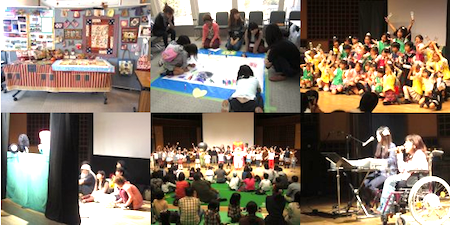

エクラアニマルからすぐそこにある『北原保育園』にX'masイベントのお手伝いをしてきました！エクラには冬になるとサンタさんへ変身するおじさまと、当時銀髪だったという理由で子サンタに選ばれたメアとで、一緒に行ってきましたよ。
|
今回はK's powerさんのX'masパーティにお邪魔してきました！ 我が社のサンタさんも遊びに行きましたよ！K'sの子供達は驚くほど元気いっぱい、またいつか元気なダンスを見たいです…！ |
|
エクラアニマルからすぐそこにある『北原保育園』にX'masイベントのお手伝いをしてきました！エクラには冬になるとサンタさんへ変身するおじさまと、当時銀髪だったという理由で子サンタに選ばれたメアとで、一緒に行ってきましたよ。 |
|
中原小学校へ、キャラ丸君と一緒にエコキャップ回収へ行ってきました！今回もたくさんのエコキャップを集めてくれましたよ。いつもありがとうございます。 |
|
ヴィー•ガーデンにてマンションに住んでいる方達をお呼びしてイベントを開いていたのですが、そこにキャラ丸君と我が社のサンタさんをゲストとして参加させていただきました！人数は約500人！人数も入れ替え制で行う等、もう大盛り上がり。とっても楽しいイベントでした。 |
|
新年…にはまだ早いですが、マンションのもちつき大会に呼ばれたのでキャラ丸君と遊びに行きました！ひげのおじいちゃんが杵を折ってしまうなどハプニングもありましたが、とっても楽しかったよ！ |
|
西東京市のイベント、市民祭りにエクラメンバーみんなで参加してきました！キャラ丸君とドク丸君も一緒に行ってきましたよ。ステージイベントや屋台もあってとっても賑やかでした！ |
|
11月6～7日にかけて那須甲子ファミリーフェスティバルというイベントに参加してきました！語り部さん達がいっぱい集まって色々なお話が聞けた、とても充実したイベントでとても楽しかったです。今回は松本佳奈さんも一緒に行きました！ |
|
いつもお世話になっている保谷第一小学校さんからエコキャップをいただきました！ステージにはエコキャップが大量に積まれていて私達もびっくり！これからもよろしくお願い致します。 |
|
1年に1度のエクラ大イベント、こもれび100円劇場を主催しました！ダンスや人形劇、オリジナルムービーなど内容はもりだくさん！もちろんエクラメンバーも人形劇で参加しましたよ！たくさんのお客さんが来てくれました。  |
10月17日 縄文の秋祭り今回は縄文の秋祭りというイベントに参加してきましたっ。縄文時代について詳しく知る事ができたり、実際に縄文時代のものに触れてみようという企画など、とっても面白いものばかり！みんなも１度行ってみてね！ |